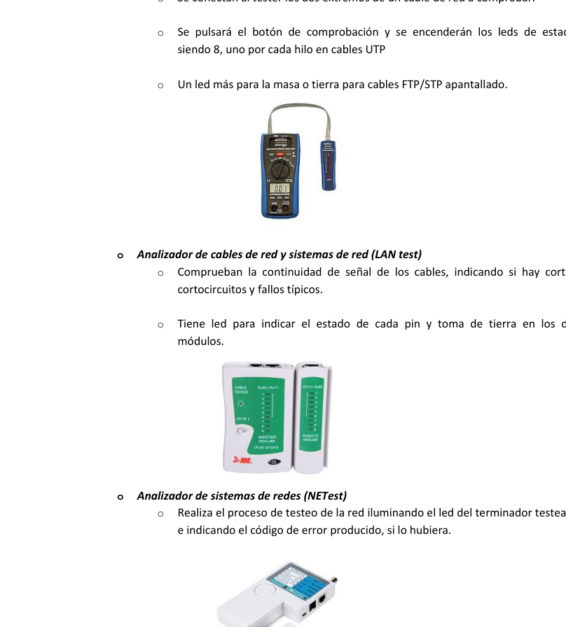

Ficha de diagnóstico · Conectividad
Adaptador y cable de red
No hay enlace, cortes o velocidad inferior a la esperada
Fuente PDF: Páginas 15–16¿Qué estamos diagnosticando?
Separar problema físico del cableado de problemas IP, controladores o servicios.
Seguridad y actualización: No conectar un tester pasivo a un cable alimentado con PoE salvo que su manual indique compatibilidad.
Material y herramientas
Tester RJ45Cable y puerto conocidosipconfig/ping
Procedimiento paso a paso
- Observar LEDs de enlace y la velocidad negociada en sistema y switch.
- Probar otro latiguillo y otro puerto válidos.
- Con el cable desconectado de los equipos, comprobar continuidad y mapa de hilos con tester RJ45.
- Revisar daños, conectores y orden de pares; un tester básico no certifica categoría ni rendimiento.
- Verificar dirección IP, puerta de enlace y conectividad con ping.
- Documentar si el fallo es de enlace, cableado, configuración o controlador.
Interpretar el resultado
LED iluminado solo indica enlace; no garantiza funcionamiento de IP o salida a Internet.

Imagen tomada del PDF original, Páginas 15–16. Algunos datos del esquema pueden corresponder a equipos antiguos.
Hoja de intervención
0 de 5 pasos comprobados
Documentación complementaria
Consulta el manual oficial de la placa, procesador, dispositivo o componente exacto antes de aplicar medidas específicas.
Ver otras averías